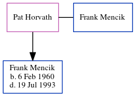

Pat Mencik (née Horvath)
| [ Calendar ] | [ Surnames Index ] | [ Census Index ] | [ Family History ]Pat Horvath and married Frank Mencik (a butcher with whom she had 1 child, Frank Joseph) on 22 oct.
Children
- Frank Joseph was born on Feb 6, 1960
Family Tree
Generated by ged2site. Last updated on Jun 12, 2024